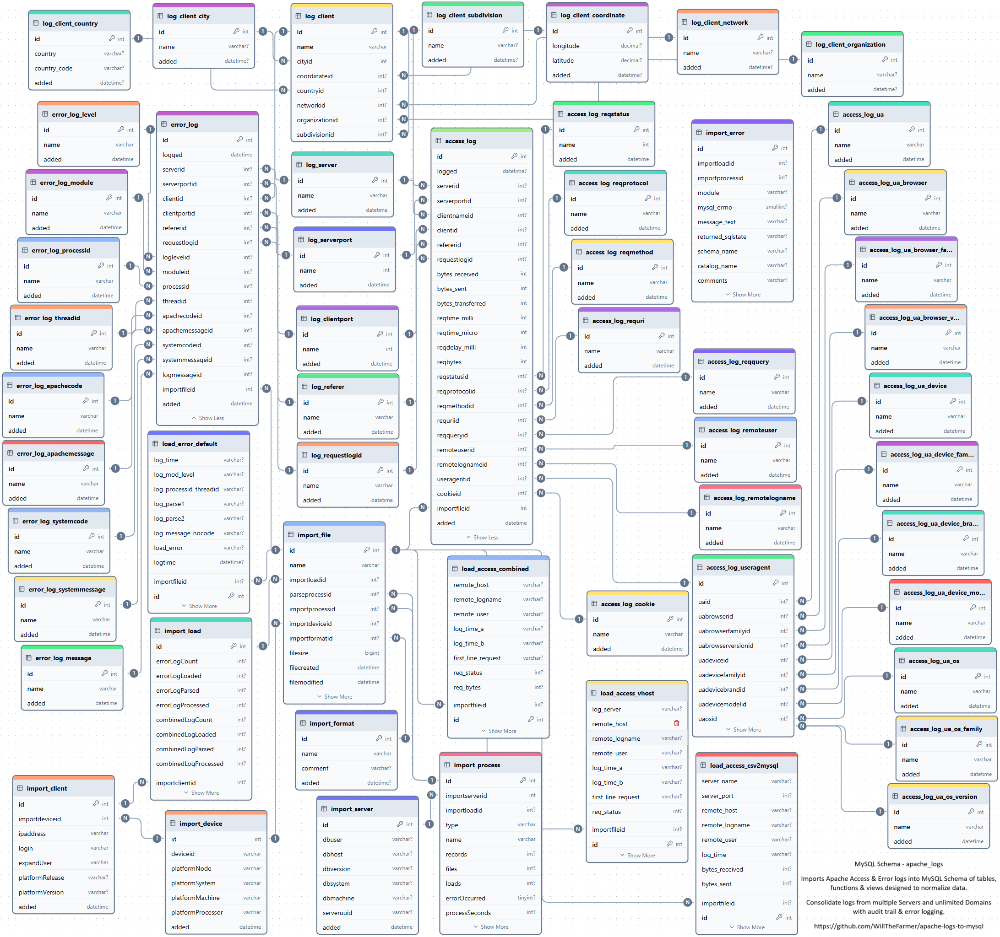

ApacheLogs2MySQL consists of two Python Modules & one Database Schema apache_logs to automate importing Access & Error files and normalizing data into database designed for reports & data analysis.
Runs on Windows, Linux and MacOS. Database runs on MySQL and MariaDB.
4 LogFormats & 2 ErrorLogFormats can be loaded and 6 Stored Procedures can be processed in a single Python `ProcessLogs function` execution.
IP Geolocation data integration using MaxMind GeoIP2 Python API provides IP country, subdivision, city, system organization, network and coordinates information stored and normalized into 6 Database Schema tables.
User-Agent data integration using User-Agents provides browser, device and operating system information stored and normalized into 11 Database Schema tables.
Database Schema designed to accommodate unlimited Servers & Domains. Step-by-step guide for easy installation.
Screenshots of Process Messages and Benchmarks for MariaDB version 11.8 and MySQL version 9.2.
MySQL2ApacheECharts consists of Express web application frameworks with Drill Down Capability & Apache ECharts frameworks for Log Data Visualization in charts, reports & data analysis interfaces of Database Schema apache_logs created by ApacheLogs2MySQL
Application is in development with initial release scheduled for May.
Database Schema apache_logs currently has 55 Tables, 1040 Columns, 190 Indexes, 85 Views, 8 Stored Procedures and 90 Functions to process Apache Access log in 4 formats & Apache Error log in 2 formats. Database normalization at work!
Benchmarks executed on Windows 11 | 13th Gen Intel(R) Core(TM) i7-13700T 1.40 GHz | 96GB DDR5-5600 SODIMM | WD_BLACK 1TB SN850X NVMe SSD - Up to 7,300 MB/s